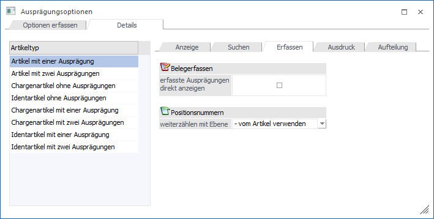
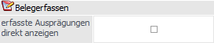
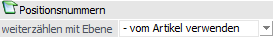

In dem Unterregister "Erfassen" kann pro Artikeltyp hinterlegt werden, ob die Ausprägungen in der Belegerfassungstabelle direkt angezeigt werden sollen und wie die Positionsnummernvergabe erfolgen soll.

Belegerfassen

Ø erfasste Ausprägungen direkt anzeigen
An dieser Stelle kann definiert werden, ob in der Belegerfassung die Ausprägungen standardmäßig (nach der Erfassung) direkt angezeigt werden sollen (Option aktiviert) oder nicht (Option deaktiviert).
Hinweis
In der Belegerfassung können die Ausprägungen jederzeit ein- bzw. ausgeblendet werden.
Positionsnummern

Ø weiterzählen mit Ebene
Welche Positionsnummer bei den einzelnen Ausprägungen vergeben werden soll, kann an dieser Stelle definiert werden. Folgende Varianten stehen zur Verfügung:
ü - - vom Artikel verwenden
Es
wird die Positionsebene aus dem Artikelstamm des Ausprägungsartikels
verwendet.
ü X - nächste Ebene nach dem
Hauptartikel
Es wird die Positionsebene des Hauptartikels herangezogen und um
eine Ebene erhöht.
ü 0 - Keine Positionsebene
Es
wird keine Positionsnummer vergeben.
Hinweis
Wenn in der zuvor erfassten Belegzeile bereits eine Positionsebene eingestellt wurde, dann wird diese auch bei den Ausprägungen weiterverwendet.
ü 1 bis 5 - Positionsebene
Es
wird die jeweilig eingestellte Positionsebene herangezogen.